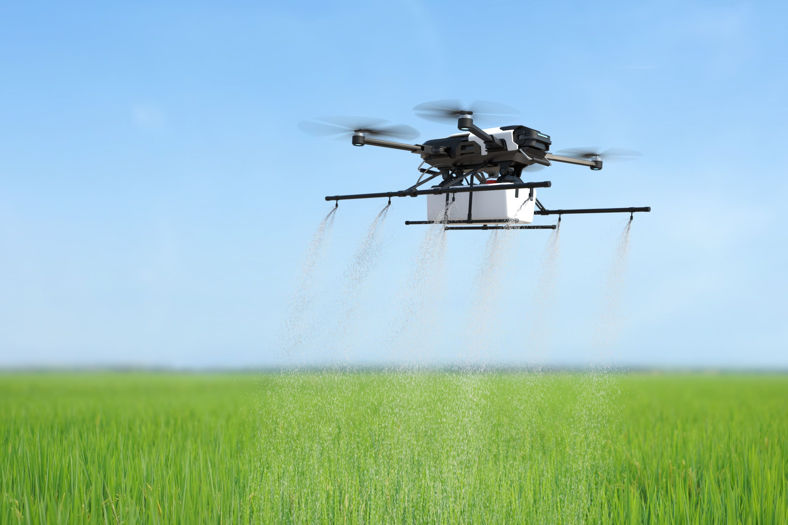
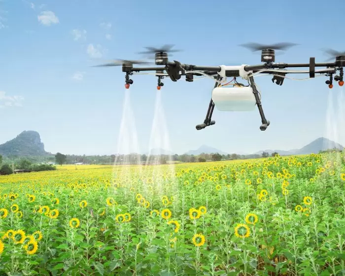

Blog do Agronegocio

Os drones para mapeamento aéreo são de fato os mais populares e versáteis do mercado. Através de câmeras e outros sensores eles são capazes de monitorar toda a lavoura e ainda capturar informações de geolocalização.
Através do processamento de imagens, as fotos de drone se tornam mapas de alta resolução. Assim, é possível realizar uma série de análises e tarefas como:
Monitoramento da lavoura
Medição e regularização de área
Demarcação de plantação
Mapas de terraceamento
Detecção de falhas de plantio
Criação de índices de aplicação em taxa variável
Contagem do rebanho
Controle de plantas daninhas
Antes dos drones agrícolas, o trabalho de pulverização era realizado manualmente por um operador agrícola. Agora, com aeronaves especializadas, este processo leva menos tempo e esforço.
Além disso, eles também contribuem para a otimização da dose de aplicação da pulverização e o uso de técnicas de agricultura de precisão. Mas afinal, como?
Através de mapas de taxa variável de aplicação é possível programar os drones para voar em múltiplos níveis e aplicar a pulverização com precisão. Ou seja, as taxas de perda de insumos são reduzidas, maximizando a eficácia e reduzindo a quantidade de produto usado, resultando em economia financeira para o agricultor e mais segurança.
Já imaginou otimizar o processo de irrigação da lavoura? Atualmente já é possível, mas com o desenvolvimento de drones agrícolas que desempenhem essa função a economia e eficiência se tornará ainda maior.
Outras tecnologias como sensores hiperespectrais, multiespectrais ou térmicos já são usadas para a identificação de áreas dentro da propriedade que apresentam maior necessidade de irrigação. Desse modo, você pode direcionar o sistema de irrigação exatamente para essas áreas.
Copyright © 2024 blog do agronegocio